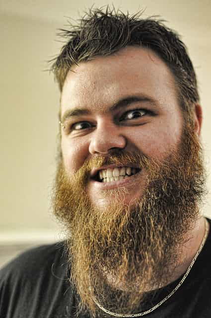
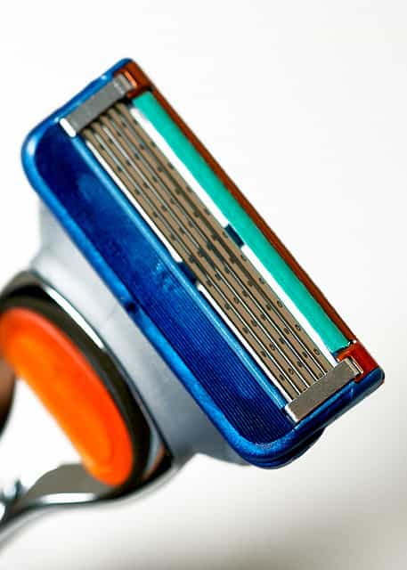
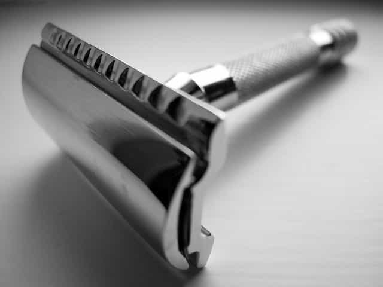
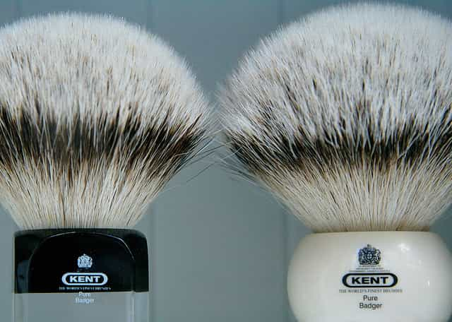
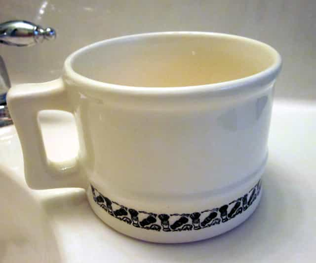
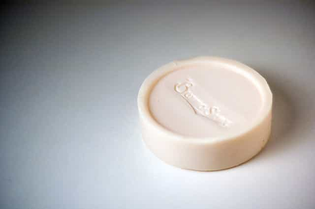
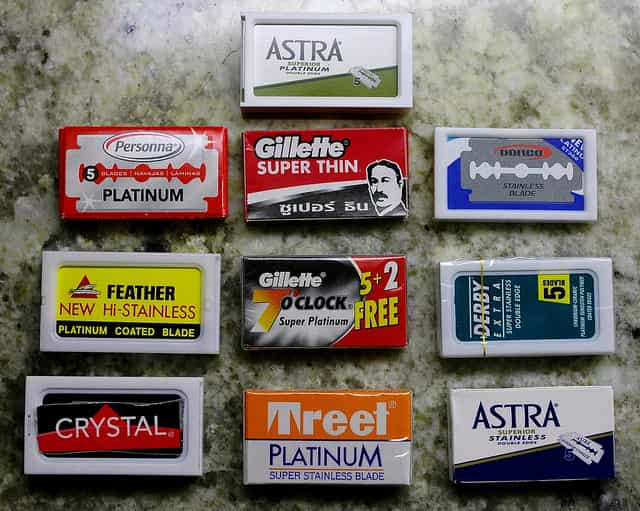
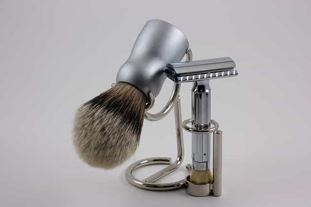
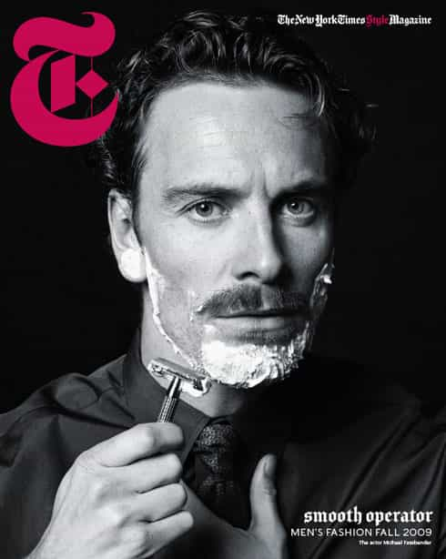

< < < Back
7 Things You Need To Shave Like A Real Man – Return Of Kings
It’s Sunday night. You’re starting to look like this bro…

photo credit: Flikr
You have work in the morning, so you need to look like more like this guy…
photo credit: Flikr
You normally use one of these…

photo credit: Flikr
But you are getting sick of these prices…

photo credit: Flikr
There is a better way. Wet shaving is how your grandpa did it, and also Hemingway. It will cost you more up front to buy the gear. But it will save you money in the long run. Here are the 7 things you need to buy so you can shave like a real man.
1. A heavy, double-edged safety razor. Get a long-handled version if you have big hands.

photo credit: Flikr
Merkur Model 180 DE Razor
2. A silvertip badger hair brush. The stiff hair helps soften your beard.

photo credit: Jeremy Brooks via photopin cc
Parker Silvertip Bristle Brush
That’s right, badger. How many brushes will they get out of this one?
Photo credit: Andreas-photography via photopin cc
3. A good shave mug. Don’t use a coffee cup.

Colonel Conk Shave Mug Model 129
4. Shave soap. Pricey soap is nice but the cheap stuff works just as well.

photo credit: ilmungo via photopin cc
Colonel Conk Shaving Soap
5. Razor blades. Buy the variety pack and test them all. 100 blades for $25 on Amazon. I like the Feather Platinum.

photo credit: Flikr
DE Razor Variety Pack
6. Quality after shave. Or Old Spice.
photo credit: Flikr
Bay Rum
7. A stand. Not absolutely necessary, but it looks cool and keeps brush and blade dry.

photo credit: Flikr
Colonel Conk Shave Stand
Then, learn to shave. Like Mr. Fassbender does it. It will take some practice.

photo credit: NYTimes Blog
Reap your well-deserved reward…
photo credit: inlinguaManchester via photopin cc
Read More: How To Wear A Beard Without Looking Like An Ax Murderer


{kind=link}
{kind=link}